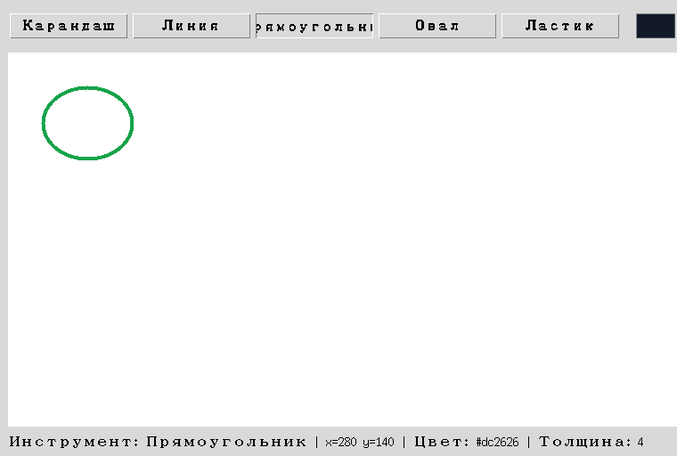

Глава 18 · История и документ
Отмена действий (Undo)
Один пользовательский жест может состоять из многих элементов Canvas — отменяться он должен целиком.
Отмена по действиям, а не по элементам Canvas
Наивная реализация Undo — просто удалить последний созданный элемент Canvas. Проблема: один карандашный штрих состоит из МНОГИХ отдельных отрезков (раздел 18.14) — «отменить» удалит только последний крошечный кусочек штриха, а не весь его целиком, чего пользователь точно не ожидает.
istoriya_deystviy.py
undo_stack = [
[item_id_1, item_id_2, item_id_3], # один карандашный штрих — три отрезка
[item_id_4], # один прямоугольник — один элемент
]Финальное приложение решает это через документ (раздел 18.13, 18.29): каждое пользовательское
действие — один или несколько объектов Shape — целиком добавляется в
документ и целиком же может быть отменено:
undo.py
def _commit_action(self, shapes):
self.document.extend(shapes)
self.undo_stack.append(shapes) # ОДНО действие — даже если shapes из многих отрезков
self.redo_stack.clear()
self.render_document()
def undo(self):
if not self.undo_stack:
return
shapes = self.undo_stack.pop()
del self.document[len(self.document) - len(shapes):]
self.redo_stack.append(shapes)
self.render_document()

render_document() — то же render(), что и в главе 17
После отмены документ меняется, а холст просто ПЕРЕРИСОВЫВАЕТСЯ из него заново — не точечное удаление конкретных элементов Canvas. Тот же принцип «модель меняют действия, Canvas только отображает текущее состояние», что и
render() в игре «Крестики-нолики».Практика: стек отмены по действиям
Автоматическая проверка — undo убирает ВСЕ элементы одного действия, а не один